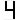
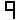

| MEA - NG02 |
| UNE PRESSION SUR DEF --- LES DÉFAUTS DÉFILENT 1 PAR 1 | ||
| UNE PRESSION SUR DEF ET PRG -- EFFACEMENT DE TOUS LES DEFAUTS | ||
| UNE PRESSION SUR DEF (1 SECONDE) -- MODE PROGRAMME | ||

|
L'appareil a effectue un recalage (coupure secteur, fin d'inspection, suite a défaut ih ou 1b) | |
 |
Control retombée des contacteurs (un des contacts entre CCO et REF est reste ouvert) | |
|
|
PV trop longue (paramétrable) (la PV a dure plus de 7 ou 14 secondes) | |
|
 |
Surcharge (l'entrée SUR est alimentée) | |
 |
Défaut de sens (intervient uniquement au recalage voir AGH, AGB et le capteur) | |
 |
Antipatinage descente (les faisceaux du capteur n'ont pas bouge pendant + de 20s) | |
|
Antipatinage montée (les faisceaux du capteur n'ont pas bouge pendant + de 20s) | |
 |
Masse : le connecteur REF ou 24CC ou DO1 ou TH1 ou TH2 a un liaison avec la terre | |
 |
Détection incendie au moins une des entrées incendie n'a pas été alimentées | |
| Secours tobia active (l'entrée EL3 de la carte NG12 est alimentée) | ||
 |
Boite arrêt GV bas actionnée quand ascenseur en haut (si AGB ok alors ascenseur en service) | |
| Boite arrêt GV haut actionnée quand ascenseur en bas (si AGH ok alors ascenseur en service) | ||
 |
Extrême simultanés (les entrées AGH et AGB sont coupées en même temps) | |
 |
Coupure de l'entrée SE3 pendant la marche | |
| Coupure de l'entrée SE4 pendant la marche | ||
|
à
|
Défaut verrouillages (voir paramètre DP) retrancher 20 de l'indication, le chiffre obtenu correspond au niveau ou s'est produit le défaut | |

a
|
Coupure sécurité 6 en marche retrancher 50 de l'indication, le chiffre obtenu correspond au niveau ou s'est produit la coupure | |
|
Antipatinnage ouverture porte A (FCOA n'a pas été actionne dans les temps) | |
 |
Antipatinnage fermeture porte A (FCFA n'a pas été actionne dans les temps) | |
|
Antipatinnage ouverture porte B (FCOB n'a pas été actionne dans les temps) | |